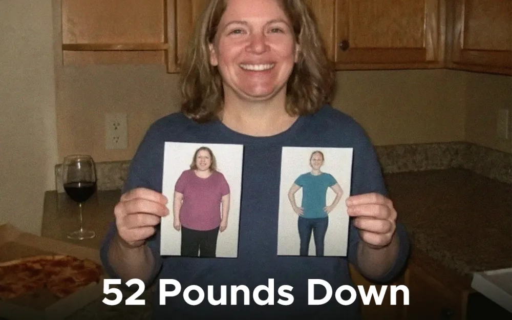
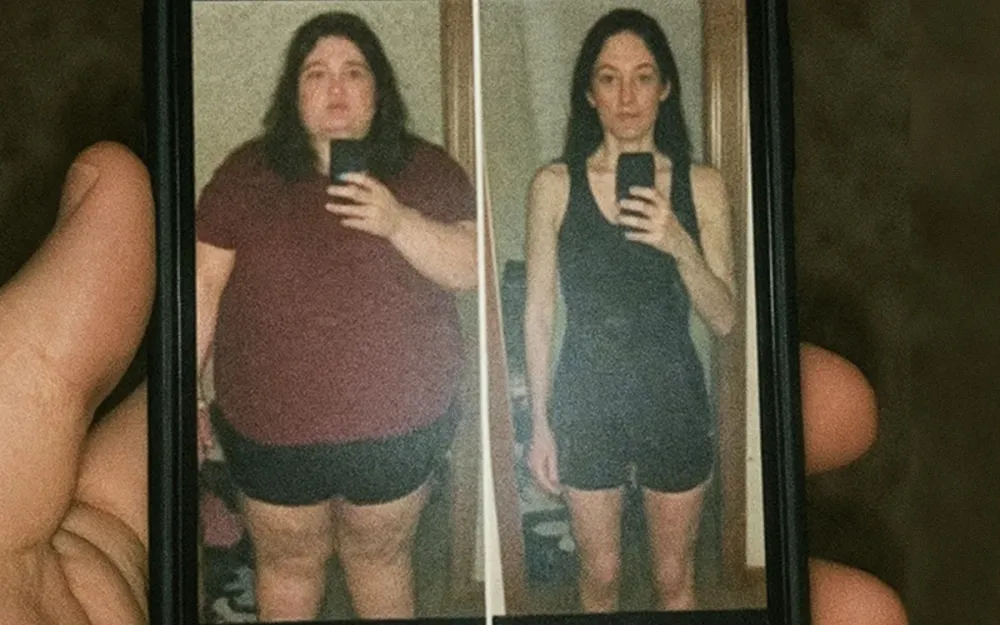
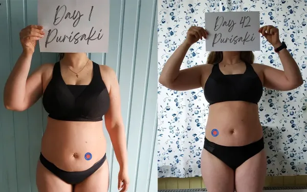
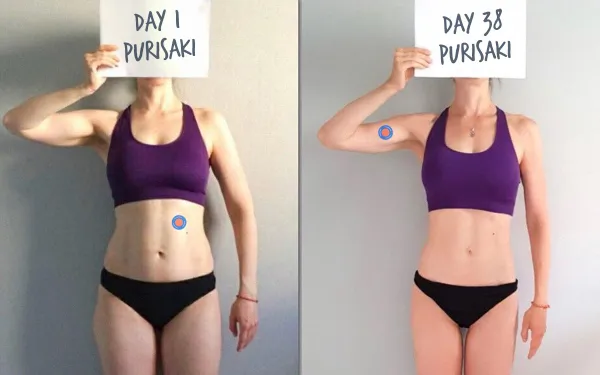
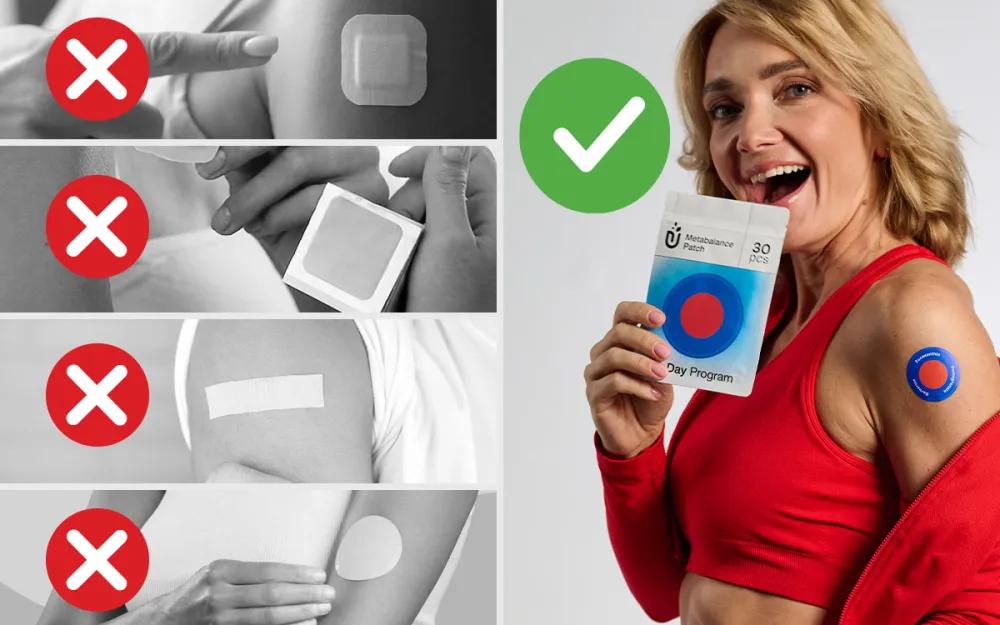

Wie diese ungewöhnliche Hautanwendung mir geholfen hat, mich wohler in meinem Körper zu fühlen

Ich heiße Sarah M., bin 54 Jahre alt und lebe mit meinem Mann und unseren zwei Teenagern in Denver. Ich bin eine ganz normale berufstätige Mutter, die wieder selbstbewusster und ausgeglichener sein wollte.
Als meine Welt zusammenbrach
Über Jahre hinweg fühlte ich mich träge und „schwer“. Ich habe jede Diät, jedes Trend-Supplement ausprobiert und Unmengen für Fitnessstudio-Mitgliedschaften ausgegeben, zu müde, um sie zu nutzen. Es fühlte sich wie ein endloser Kreislauf der Enttäuschung an.

Mit 40 fühlte es sich an, als hätte jemand einen Schalter umgelegt. Mein Stoffwechsel kam zum Stillstand und die Pfunde schlichen sich langsam dann immer schneller – an. Bald musste ich Größe 14 Jeans kaufen und vermied Spiegel, als wären sie ansteckend.
Eines Tages beim Shopping für das Abschlusskleid meiner Tochter war der Moment erreicht: Das Kleid ließ sich nicht schließen.
Größe 16. Was ich im grellen Licht sah, war eine Frau, die ich nicht wiedererkannte
aufgebläht und niedergeschlagen.
Meine teuren Fehlschläge

Ich versuchte alles.
Weight Watchers hielt genau sechs Wochen – das ständige Punkte-Zählen fühlte sich wie ein Gefängnis an.
Das Fitnessstudio war ein komplettes Desaster – insgesamt drei Besuche, bevor ich endgültig aufgab.
Keto machte mich unausstehlich: ständiger Gehirnnebel, Stimmungsschwankungen und null Lebensfreude.
Nachdem ich all diese Promi-Transformationen gesehen hatte, schaute ich mir sogar diese angeblichen „Wunder-Behandlungen“ an. 1.200 $ pro Monat aus eigener Tasche??? Das konnten wir uns schlicht nicht leisten – und die möglichen Nebenwirkungen machten mir ehrlich gesagt Angst.
Alles änderte sich nach dieser überraschenden Entdeckung
Mein Wendepunkt kam bei einem Familien-Grillfest, als ich meine Schwägerin Michelle kaum wiedererkannte. Sie sah fantastisch aus – strahlend, selbstbewusst und offensichtlich über 13 Kilo leichter.
„Was um alles in der Welt machst du?“, fragte ich sie.
Sie lächelte und sagte: „Ganz ehrlich? Diese Purisaki-Patches, die ich jeden Morgen aufklebe.“ Sie zeigte mir sogar ihre Vorher-/Nachher-Fotos – und der Unterschied war nicht zu leugnen. Sie erklärte mir, dass Purisaki pflanzliche Extrakte direkt über die Haut abgibt und so eine sanftere Aufnahme ermöglicht.
Ich war fasziniert … aber immer noch skeptisch.

Drei Tage später traf ich mich mit meiner ehemaligen Studienfreundin Lisa Chen, die zufällig wegen einer medizinischen Fachkonferenz in der Stadt war. Als ich Michelles Veränderung erwähnte, nickte Lisa sofort.
„Was du beschreibst, nennt man metabolische Resistenz“, erklärte sie. „Nach dem 35. Lebensjahr reagieren viele Frauenkörper anders auf klassische Methoden zur Gewichtsabnahme. Das Verdauungssystem wird überlastet und kann wichtige Nährstoffe nicht mehr effizient aufnehmen.“
Sie erzählte mir, dass neue Forschungsergebnisse darauf hindeuten, dass eine transdermale Aufnahme – so wie der Ansatz, den Purisaki verwendet – eine bessere Wirkstoffaufnahme ermöglichen könnte als herkömmliche orale Nahrungsergänzungsmittel.
„Deine Haut hat direkten Zugang zum Blutkreislauf“, sagte sie. „Einige frühe Studien zeigen, dass bestimmte Inhaltsstoffe auf diesem Weg sogar effektiver wirken können.“
Dann griff sie lachend in ihre Tasche und sagte:
„Ich habe auf der Konferenz ein paar Proben der Purisaki-Patches mitgenommen. Viele Wissenschaftler haben darüber gesprochen. Ich dachte, du möchtest sie vielleicht ausprobieren.“
Ich verließ dieses Café mit einer kleinen Packung Purisaki-Patches … und mit einem winzigen Funken Hoffnung, den ich seit Jahren nicht mehr gespürt hatte.
So funktioniert es tatsächlich
Als ich mit den Test- Purisaki-Patches nach Hause kam, verstand ich endlich, warum Michelles Ergebnisse so logisch waren. Purisaki gibt seine Inhaltsstoffe direkt über die Haut ab – und verschafft ihnen damit einen direkteren Weg in den Blutkreislauf.
Jeder Purisaki-Patch enthält eine Mischung natürlich gewonnener Inhaltsstoffe, die häufig mit metabolischer Unterstützung in Verbindung gebracht werden, darunter:
- ✅ Fucoxanthin – ein einzigartiger Wirkstoff aus Meeresalgen, der oft mit der Unterstützung hartnäckiger Problemzonen in Verbindung gebracht wird
- ✅ Grüntee-Extrakt – bekannt für seine Verbindung zu Energie und Stoffwechselbalance
- ✅ Afrikanischer Mangosamen – traditionell zur Unterstützung des Appetitgefühls verwendet
- ✅ Granatapfelöl – bekannt für antioxidative Eigenschaften und allgemeines Wohlbefinden

Da die Inhaltsstoffe den Magen-Darm-Trakt umgehen, wirkt die Unterstützung den ganzen Tag über gleichmäßiger und sanfter – kein Zittern, keine plötzlichen Erschöpfungstiefs, sondern einfach mehr Energie und weniger Heißhunger.
Hier sind einige Dinge, die ich an dem Pflaster besonders schätze:
✅ Wirkt diskret im Hintergrund während Ihres Alltags
✅ HHilft, Heißhungerattacken unter Kontrolle zu halten
✅ UNutzt ein transdermales Abgabesystem über die Haut
✅ DErfordert keine strengen Diäten oder komplizierten Routinen
Und das Beste daran? Die Anwendung dauert nurzehn Sekunden
Einfach abziehen, aufkleben und fertig. Sie tragen das Pflaster etwa 8 Stunden lang und nehmen es dann einfach wieder ab – wie ein einfacher „Ein/Aus“-Schalter. Keine Erinnerungen, keine festen Pläne und keine komplette Umstellung des Lebensstils erforderlich.
Ich habe die Pflaster mit nach Hause genommen – und das ist passiert
Ich muss ehrlich sein: Ich war anfangs etwas skeptisch. Ehrlich gesagt sahen diese Aufkleber lächerlich aus, ber ich war neugierig genug, sie auszuprobieren. ber ich war neugierig genug, sie auszuprobieren. völlig umgehauen!
Woche 1
Das Erste, was mir auffiel, war nicht der Gewichtsverlust – sondern mein Schlaf. Kein Aufwachen mehr um 3 Uhr morgens. Meine Lust auf Wein verschwand komplett. Die Waage zeigte 1,5 Kilo weniger.
Woche 4
Insgesamt 5,5 Kilo weniger. Die Leute fragten mich, ob ich etwas mit meinen Haaren gemacht hätte. Nach der Arbeit hatte ich wieder Energie für meine Kinder – statt erschöpft zusammenzubrechen.
Monat 2
Ab hier beschleunigte sich alles. Das Gewicht ging stetig runter. Pizza-Freitage blieben – aber die Portionsgröße regelte sich ganz von selbst. Am Ende des zweiten Monats waren es über 12 Kilo weniger.
Monat 3
Kein Witz: Als ich mich auf die Waage stellte, dachte ich zuerst an einen Fehler. Ich hatte insgesamt 19 kg (42 lbs) verloren. Emma sagte, ich hätte mein "Strahlen zurück". Endlich macht Shoppen wieder Spaß, anstatt deprimierend zu sein. Aber meine Verwandlung war noch nicht am Ende.
Monat 4
Als ich diesmal auf die Waage stieg, musste ich zweimal hinschauen. INSGESAMT 23,5 KG (52 POUNDS) WENIGER!!! Ich habe es geschafft! Ich habe mein Zielgewicht erreicht, und das ohne auf eine einzige Sache zu verzichten, die ich liebe. Mein Körper hat sich endlich wie von selbst neu eingestellt.

Echte Frauen, Echte Ergebnisse

"Ich bin 57 und dachte, mein hartnäckiges Bauchfett nach den Wechseljahren wäre dauerhaft. Mit diesen Pflastern habe ich in weniger als zwei Monaten über 12 kg verloren."

"Ich bin ständig auf Reisen und esse oft auswärts. Die Pflaster sind perfekt – ich packe sie einfach in mein Handgepäck. Schon 15 kg runter und es geht weiter."

"Ich hasse Fitnessstudios und habe sowieso keine Zeit dafür. Sport ist nicht nötig. Ich habe 18 kg verloren, während ich einfach mein ganz normales Leben gelebt habe."
Und dies sind nur drei Beispiele von über 15.000 Frauen, die die Purisaki-Berberin-Pflaster ausprobiert haben.
Die meisten berichteten sogar vonsichtbaren Ergebnissen innerhalb der ERSTEN Woche, ganz ohne Nebenwirkungen.
Ich möchte das ausprobieren!Wenn Sie dies lesen, passen Sie gut auf...
Wenn Sie mich fragen: Endlich die Kontrolle über den Heißhunger zu haben, mit konstanter Energie aufzuwachen und zuzusehen, wie die Kleidung wieder bequemer sitzt? Das ist wirklich unbezahlbar.
Wenn Sie also mit hartnäckigem Gewicht, einem langsamen Stoffwechsel oder ständigen Energietiefs zu kämpfen haben... ist Purisaki definitiv eine Überlegung wert.
Aktuell bieten die Hersteller einen exklusivenRabatt von 70% für die Leser dieser Seite an – aber nur solange der Vorrat reicht. Außerdem erhalten Sie:
✅ Kostenloser Versand
✅ 60-Tage-Zufriedenheitsgarantie
✅ Frische Produktionschargen mit verifizierten Qualitätssiegeln
IMeiner Erfahrung nach muss es sich nicht wie eine Bestrafung anfühlen, die Kontrolle über den eigenen Körper zurückzugewinnen. Manchmal kann die kleinste tägliche Gewohnheit alles verändern.
Wenn Sie bereit sind, sich wieder leichter, ausgeglichener und mehr wie Sie selbst zu fühlen... könnte Purisaki die sanfte Unterstützung sein, nach der Sie gesucht haben.
Bereit für Ihre eigene Verwandlung? Starten Sie mit Purisaki!Zeitlich begrenztes Angebot — und eine wichtige Warnung

Purisaki hat schnell an Aufmerksamkeit gewonnen – und durch den aktuellenRabatt von 70%leert sich der Lagerbestand schneller als erwartet. Tausende haben es bereits ausprobiert, um hartnäckiges Gewicht, Heißhunger und Energiemangel in den Griff zu bekommen, und neue Chargen sind oft direkt nach Erscheinen ausverkauft.
Doch bei all der Nachfrage höre ich auch immer wieder beunruhigende Geschichten. Frauen kauften „ähnliche“ Pflaster von dubiosen Websites und erzielten keinerlei Ergebnisse – oder schlimmer noch, sie klagten über Hautirritationen durch billige Nachahmungen mit unbekannten Füllstoffen und veralteten Abgabesystemen.
Deshalb verwendet das Unternehmen jetztffizielle holografische Siegel und Chargenprüfungen um die Echtheit zu garantieren.
Wenn Sie sich entscheiden, Purisaki auszuprobieren, stellen Sie sicher, dass Sie das Original erhalten – nur über die offizielle Website olange der 70%-Rabatt noch aktiv ist. Der Vorrat ist begrenzt, und sobald diese Charge weg ist, endet das Angebot.
Mein Fazit
Vor sechs Monaten habe ich mich noch vor jedem Spiegel versteckt und soziale Ereignisse gemieden, wo ich nur konnte. Ich fühlte mich unsichtbar, erschöpft und gefangen in einem Körper, der sich nicht mehr wie meiner anfühlte.
Seitdem diePurisaki Teil meiner täglichen Routine sind, fühle ich mich endlich wieder wohl in meiner Haut. Ich passe wieder in Kleidergröße 36, die ich seit meinen Zwanzigern nicht mehr getragen habe. Meine Energie ist konstanter und ich freue mich morgens tatsächlich wieder darauf, mich fertig zu machen.
Aufgrund der hohen Nachfrage sind die Purisaki-Bestände oft schnell ausverkauft – und die Sonderpreise für die Leser dieser Seite gelten nur, solange der Vorrat reicht.
Wenn Sie bereit für einen Neuanfang sind, könnte Ihre eigene Veränderung schon morgen beginnen.
UPDATE: Wir haben gerade die Nachricht erhalten, dass der aktuelle Bestand von Purisaki aufgrund eines viralen Social-Media-Posts schneller als erwartet zur Neige geht. Der unten stehende 70%-Rabattlink ist derzeit noch aktiv, kann aber innerhalb der nächsten Stunden ablaufen. Wenn Sie auf den Link klicken und die Meldung „Ausverkauft“ sehen, schauen Sie bitte nächsten Monat wieder vorbei. Falls Sie das Bestellformular sehen, empfehlen wir Ihnen dringend, sich Ihr Paket sofort zu sichern, bevor der Bestand aufgebraucht ist.
Über 15.000 Frauen spürten bereits nach 1 Woche eine Veränderung
Erfahren Sie, wie ein kleines Pflaster für tausende Frauen zum Durchbruch im Gewichtsmanagement wurde.


Ich war zuerst skeptisch – wie kann ein Pflaster wirklich helfen? Aber nach einer Woche merkte ich, dass ich nachmittags nicht mehr zu Snacks griff. Es ist so einfach morgens aufzukleben und dann zu vergessen. Endlich etwas, das in meinen stressigen Mama-Alltag passt!
Ehrlich gesagt habe ich alles ausprobiert. Dies ist das erste Mittel, bei dem ich mich nicht zittrig oder krank fühle. Ich liebe es, dass es natürlich ist und ich nicht über den Tag verteilt an Tabletten denken muss. Das Hungergefühl zwischen den Mahlzeiten hat deutlich nachgelassen. Schon 7 kg runter!!!
Ich wollte diese schicken Abnehmpillen, die Promis benutzen, aber Freunde erzählten mir von natürlichen Alternativen. Ich bin so froh, dass ich diese Pflaster gefunden habe! Sie sind diskret – ich trage sie unter der Arbeitskleidung und niemand merkt es. Mein Heißhunger auf Süßes nach dem Abendessen ist fast verschwunden. Ich habe 3 kg verloren!
Als berufstätige Mutter brauchte ich etwas Einfaches. Keine Pillen, an die man denken muss, keine Termine, kein Drama. Einfach aufkleben und loslegen. Ich fühle mich zum ersten Mal seit Jahren wieder sicher in meiner Kontrolle über mein Essverhalten.
Die Wechseljahre haben mir viel unerwünschtes Gewicht beschert, alles an meinem Körper veränderte sich. Diese Pflaster haben mir geholfen, mich wieder mehr wie ich selbst zu fühlen. Keine Nebenwirkungen, kein Aufwand. Ich wünschte nur, ich hätte sie früher gefunden, denn ich bin schon 7 kg leichter!
Seit den Wechseljahren kämpfe ich mit meinem Gewicht und mein Arzt drängte mich zu teuren Spezialdiäten. Ich dachte, ich probiere das hier zuerst. Ich habe nicht mehr diese schrecklichen Hungerattacken am Abend, wenn ich sonst die Küche geplündert habe. Es ist einfach genug für eine alte Dame wie mich!
*Einzelergebnisse können variieren.